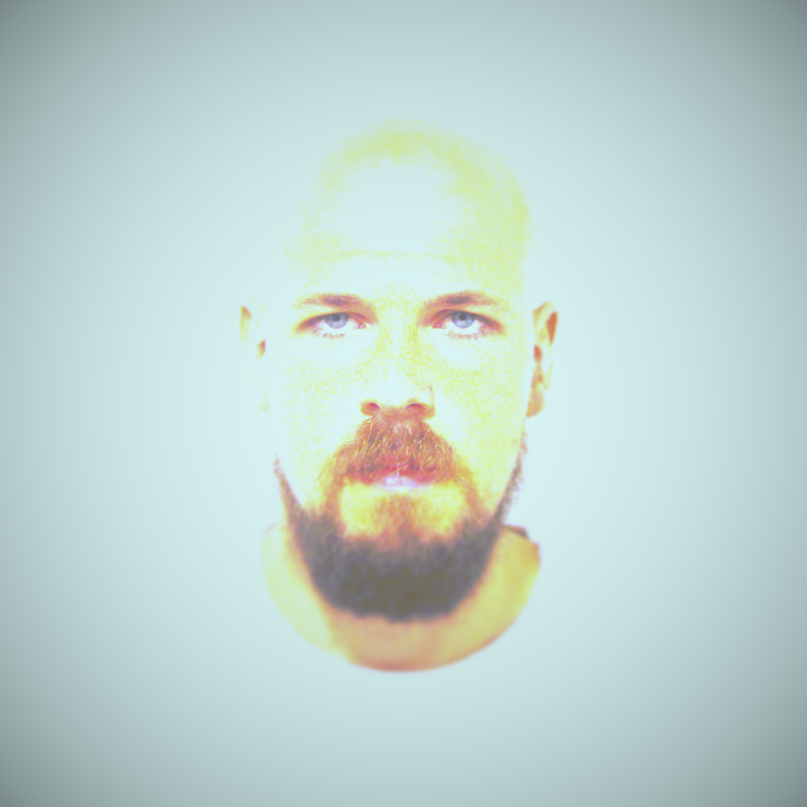

Matteo:
I'm a PhD student in Information Engineering @ DINFO, University of Florence.
I'm currently working on data fusion problems about tracking multiple extended objects with multiple sensors, with a particular attention on autonomous driving and air surveillance applications. My trackers are based on the elegant FISST framework developed by Ronald Mahler and heavily rely on a lot of clever ideas recently introduced in multiobject tracking by Ba-Ngu Vo, Marcus Baum, Karl Granström et al.
My other scientific interests span in the wide field of Automatica, e.g. including SLAM, MPC, MAS and ML system identification.
The aim of this simple website is to provide a worldwide-accessible and well-organized repository, where anyone can easily find the detailed results of my work.
QUICK INFO
| Birth: january 11th 1991, Borgo San Lorenzo [map] | ||
| Address: via Trieste 32a, 50065 Pontassieve [map] | ||
| Office: SysCon Lab, room 286, DINFO, Santa Marta [map] | ||
| Email: matteo.tesori@unifi.it | ||
| Phone: (+39) 328 23 88 480 | ||
| CV: cvtesori.pdf |

LATEST WORKS
Progress
ETA
Description
1) Lambda:Omicron showcase
4 weeks
Development of the simulation code for the Lambda:Omicron prediction model
2) Tracking metrics
paused
Analytical results about the RMSE and MD metrics generated by a generic position sensor
3) SLAM-CAM
completed
Tutoring Enrico Campo (master student) with his thesis about the real-world implementation of a SLAM algoithm.